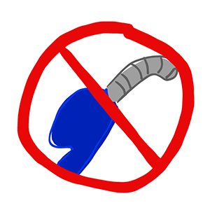
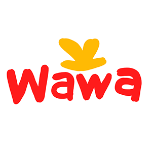
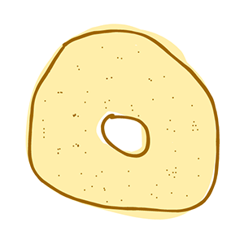

Commonly regarded as the armpit of the United States, few Americans think of New Jersey as a beautiful or stimulating place. However, outside the industrialization and dense suburbs, there are pockets of nature and quaint, charming towns. New Jersey also has a rich culture of people passionate for bagels, beach towns, diners, and not pumping our own gas. There’s plenty to hate, but more to love. Allow me to introduce Central Jersey!
I live in Mercer County, which is home to the capital of New Jersey, Trenton, and Princeton University. Being about an hour from both Philadelphia and New York, there are far more farms in this part of New Jersey than you’d expect. There are plenty of trails, some small mountains, and fields, all bordering the Delaware River. People often forget New Jersey is nicknamed “The Garden State” and you’ll find there’s a surprising amount of greenspace for the most densely populated state in the US.
But the most important thing about New Jersey is the culture. Here are a few things you need to know aout New Jersey-ians and what we care about to visit.
1. North vs South Debate

We are constantly arguing about which half of New Jersey is better. Because New Jersey borders two major cities, we find that the cultures of both bleed into the state and cause some tensions. While South may have swamps, large farmlands, Philadelphia commuters, and major beaches, the North has NYC commuters, factories, and a faster pace. The debate will never conclude, although people will defend it with their lives.
2. Pork Roll vs Taylor Ham

There is a certain breakfast meat unique to New Jersians. It often goes on our bagel sandwiches and is comparable to Canadian bacon. It’s essentially a thin slice of ham. However, part of the North vs South Jersey debate includes how to refer to it, with the North calling it Taylor Ham and the South calling it Pork Roll. Sadly, no one outside of the state cares or has even heard of the meat, and debating it is more fun than eating it.
3. Not pumping our own gas
This is something people are proud of, our perhaps only when they commodify it for bumper stickers, but Jersey Girls Don’t Pump Gas! We have gas attendants, and we sit in the car and theymcome over and we say what time of gas we want and give them money and then they do it for us. A lot of people think we tip them but it’s not super common, so no extra expenses!
4. Wawa
This is essentially a glorified gas station market. Since we don’t pump our own gas, we don’t have to go into the market to pay with cash so instead we have romanticized trips to the gas station market as an end all be all for junk food and slurpees. It’s not just a gas station supermarket, it’s the best one.
5. Bagels
This is where that New York influence comes into play. New Jersians are passionate about their bagel. Important vocab includes a BEC: Bacon, Egg, and Cheese. People are loyal to their bagel places and orders. There are no winners and a lot of blood when it’s time to debate the best place in the area.
6. Beach Towns

Within the already cult-y New Jersey fanbase, there is a subgroup that lives either in one of the beach towns or stays there in the summer. There are some vocab words you won’t understand, some stares you may receive while there, but beyond the people, The Jersey Shore will surprise you. It’s camp.
Just keep in mind, New Jersey is a great time if you let it be one. Probably more fun when you understand all the references, and there’s a lot I didn’t cover but it’s a great place.